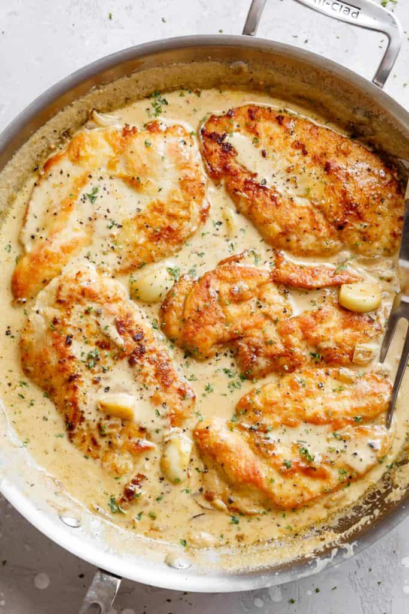

Garlic Chicken Breasts

Description
Tastes like chicken...creamy garlic chicken, that is. Take plain old chicken breasts and breathe new life into them with this delicious creamy garlic sauce. Satisfaction guaranteed, except for vampires!
Ingredients
For the Chicken
- 2-3 large boneless and skinless chicken breasts halved horizontally to make 4
- 4 tbsp flour
- 4 tbsp finely grated fresh Parmesab cheese
- 2 tsp salt
- 1/2 tsp black cracked pepper
- 1 tsp garlic powder
For the sauce
- 5 tbsp olive oil
- 2 tbsp butter
- 1 small onion finely chopped
- 1 whole head of garlic
- 1 1/4 cup chicken broth stock
- 1 1/4 cup of heavy cream
- 1/2 cup finely grated Parmesan cheese
- 2 tbsp fresh parsley, to serve